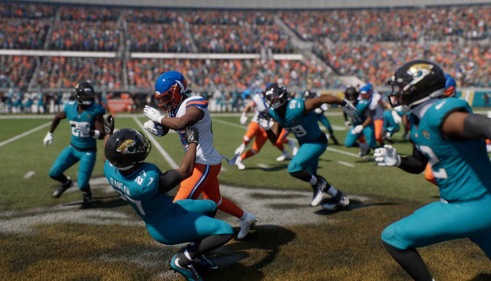

2027 INAUGURAL SEASON · WEEK 2
Bison Run Wild in Jacksonville: 31–14
Week 2 · Jacksonville · FINAL: Oklahoma City 31, Jacksonville 14 · Bison 2–0

Two games. Two wins.
After an emotional home debut, the Bison delivered a statement on the road. Oklahoma City beat Jacksonville 31–14 behind a dominant rushing attack, with 267 rushing yards from four ball carriers and four rushing touchdowns shared by Jadarian Price and Trey Benson.
Rushing production
| Player | Attempts | Yards | Avg. | TD | Fumbles |
|---|---|---|---|---|---|
| Jadarian Price | 23 | 191 | 8.3 | 2 | 0 |
| Trey Benson | 4 | 43 | 10.7 | 2 | 0 |
| Will Howard | 2 | 23 | 11.5 | 0 | 0 |
| Ashton Prentice | 1 | 10 | 10.0 | 0 | 0 |
Passing and receiving
Will Howard: 11 completions on 19 attempts, 144 yards, 0 TD, 0 INT, 81.9 passer rating. With the ground game producing, Oklahoma City kept its passing workload limited.
Tyler Warren: 4 catches for 57 yards. Parker Washington: 2 for 12. Jadarian Price: 2 for 6. Jeremiah Smith: 1 for 11. Tetairoa McMillan: 1 for 31. J. Wilson: 1 for 27.
Jacksonville leaned heavily on Tory Horton (7 catches, 33 yards), while Jakobi Meyers had 5 for 76 and Brian Thomas Jr. had 4 for 64. Andrei Iosivas was held to a single catch for 13 yards.
Overshown seizes his opening
With CJ Allen on injured reserve for five weeks, DeMarvion Overshown recorded 11 tackles (10 solo, 1 assist) and made a compelling case for a starting role. Camryn Bynum added 10 tackles, Leonard Williams 7 tackles and 2 tackles for loss, and AJ Haulcy 6 tackles.
Offensive line
Landon Dickerson registered 4 pancakes, Ikem Ekwonu 3, and Tyler Warren and Tanor Bortolini 2 apiece. The screenshots also credit a sack allowed to Dickerson and Bortolini.